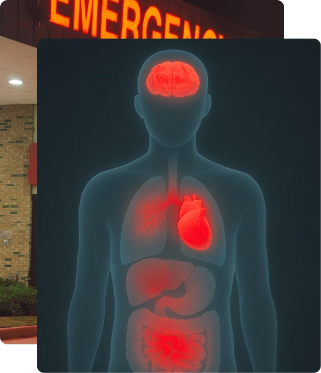

Population with ≥ 1 ACE
~64%
Nearly two-thirds reported at least one.
Population with ≥ 4 ACEs
~12.5%
(1 in 8) Sharp risk increase.
Higher ACEs linked to: Mental illness, addiction, heart & lung disease, shortened lifespan.
Understanding Your Past, Shaping Your Future
The Adverse Childhood Experiences (ACE) framework helps us understand how early adversity echoes across a lifetime. Not as bad memories. Not as emotional baggage you should have dealt with by now. As formative experiences that literally reshape how brains and bodies develop — at the biological level, before you had any say in the matter.
For years, many of us have grappled with the same questions: "Why the hell can't I just stop?" "What the hell is wrong with me?" "Why am I like this?" The ACE framework is the closest thing to an honest answer most of us were never given.
In the late 1990s, Dr. Vincent Felitti and Dr. Robert Anda conducted the original ACE Study with more than 17,000 adults — most of them middle-class, educated, and privately insured. Not the group society typically flags as "high risk." That detail matters more than it might seem. The study revealed a direct, measurable link between early adversity — abuse, neglect, household dysfunction — and long-term outcomes in physical health, mental health, and behaviour. Across every demographic. In people nobody was looking at.
The ACE Study was my entry point into the science of trauma. Before my first session of Accelerated Resolution Therapy (ART), I did what I always do — I researched. I found the study quickly, and had two reactions simultaneously.
The first was a wave of validation. Someone had finally put science and hard evidence to what I'd felt intuitively for years. The second was anger — and it hasn't fully left. "Why is no one talking about this in treatment centres?" When I asked clinicians about ACEs, their casual "oh yeah, we know about that" floored me. You know about it. And you're still not leading with it. If this information hit me with the force it did, I knew it could do the same for others. So why wasn't it central — not optional? Why was I thirty-something years into my own story before anyone pointed me toward the beginning of it?
For those of us who grew up asking "Why can't I just stop?" or "What is wrong with me?" — the ACE framework offers something rare: context. Not as an excuse. As an explanation. Our struggles are not random defects or moral failings. They are adaptations to environments we never should have had to survive.
Learn more : ACE StudyImportant: ACEs are a probabilistic risk marker, not a destiny score. A higher score reflects higher odds of certain outcomes at the population level — not certainty for you as an individual. Think of the score as a canary in the coal mine — an early warning signal, not a prediction of collapse.
ACEs also measure exposure, not experience. They do not capture severity, frequency, timing, duration, or the meaning of events — all of which strongly shape real-world impact. Two people can share the same score and carry very different biological and psychological burdens.
Outcomes depend on protective factors, later-life environment, relationships, supports, and access to effective care. Use this page to understand why risk rises — not to assume your future is fixed and you're completely screwed (you're not).

The first video I ever found on trauma and health. It was eye-opening — and genuinely infuriating — to realise this talk was already nearly a decade old, and the ACE Study behind it was from 1997. Almost thirty years of evidence. I was only just finding out.
When I first watched this talk by Dr. Nadine Burke Harris, it felt like someone had finally put language to everything I had lived. She laid out exactly how early adversity reshapes biology, alters brain development, and sets the trajectory for lifelong health outcomes. This single video became the epicentre of everything on this site — not just my understanding of addiction, but the first time I started to understand myself.
And then came the frustration. The talk was already almost ten years old when I found it. The research behind it — the original ACE Study — was from the late 1990s. Nearly thirty years of evidence sitting in plain sight, and nobody in medicine, education, or treatment had ever once handed it to me. Not once. I had to stumble onto it alone, in my thirties, while trying to figure out why my life looked the way it did.
That frustration didn't go away. It became the fuel behind everything I've built here — a refusal to let this information stay buried in academic journals and TED playlists while people who needed it most kept asking the same unanswered questions I did. If it took me this long to find it, how many others are still searching?
This talk remains one of the most powerful entry points for understanding how trauma embeds itself in the body — and why awareness, as unglamorous as it sounds, is often the first real act of recovery.
Surprised by the ACE Study? You may be equally surprised to learn Alberta ran its own version. In 2013–2014, the province conducted a population-based ACE survey with just over 1,200 adult participants from across Alberta — and the findings didn't just mirror the U.S. data. They confirmed it. More than half of Albertans reported at least one ACE. Roughly one in eight reported four or more. The survey also confirmed the dose-response effect: the higher the ACE score, the higher the rates of depression, substance use, chronic disease, and shortened lifespan. Here. In this province. In our communities.
These results make one thing impossible to dismiss: ACEs are not an American problem, a big-city problem, or a problem confined to the populations we've decided to label as "at risk." They appear in every community — including ours, including the ones that look fine from the outside. Trauma is not rare. It is measurable, it is impactful, and the fact that it remains so poorly understood in our schools, our clinics, and our treatment programmes is not an accident. It's a choice we keep making by default.
Learn More : Alberta ACE StudyBoth the U.S. and Alberta ACE studies found most people had at least one ACE, and roughly one in eight carried four or more. Two different populations, decades apart. Same pattern.
As scores rise, risk rises — higher rates of depression, substance use, suicide attempts, and chronic disease. This isn't correlation dressed up as causation. It's a dose-response relationship: more exposure, more impact, measured consistently across thousands of people in multiple countries.
The core message is uncomfortable but unmistakable: trauma is not rare, not confined, and not someone else's problem. It shows up in every dataset we bother to look at. The question has never been whether it's there. It's why we keep treating symptoms instead of addressing causes.
Population with ≥ 1 ACE
~64%
Nearly two-thirds reported at least one.
Population with ≥ 4 ACEs
~12.5%
(1 in 8) Sharp risk increase.
Higher ACEs linked to: Mental illness, addiction, heart & lung disease, shortened lifespan.
Population with ≥ 1 ACE
~55%
Over half of Albertans reported at least one.
Population with ≥ 4 ACEs
~11.8%
(1 in 8.5) Risk pattern confirmed.
Higher ACEs linked to: Depression, substance use, chronic disease, shortened lifespan.
Dr. Robert Block, Former President — American Academy of Pediatrics

Instructions: Answer Yes or No based on your experiences before age eighteen. Each “Yes” equals one point. There are no right answers here — only honest ones.
The ACE questionnaire is a screening tool, not a diagnosis. Each category counts as one point whether it happened once or many times, and the total score does not measure severity, frequency, or the full impact of your experiences. Research shows that higher scores are linked to greater health risks at the population level (especially 4+), but even a single ACE can leave lasting effects depending on the person and their circumstances. If your score resonates with your struggles, consider reaching out to a trauma-informed professional who can help you process it safely and begin healing. You deserve that support.
Nothing you enter here is saved, sent, or tracked. Your answers exist only in this page and disappear when you close it.
A note on evidence: Research linking ACEs to later outcomes varies in strength. Some associations are robustly supported across large population studies. Others are grounded in plausible biological mechanisms and emerging evidence. This page reflects that full spectrum — not all links are equally established, and none are universal. The goal is an honest picture, not a clean one.
The consequences of Adverse Childhood Experiences reach far beyond emotion — and far beyond what most people are ever told. The persistent activation of the body's stress response, known as toxic stress, doesn't stay psychological. It becomes biology: disrupting hormones, degrading immune function, and altering the physical architecture of the developing brain. The body keeps the score whether anyone is paying attention or not.
Read this list correctly: These are population-level risk associations, not guarantees for any one person. Most links run through a handful of repeat pathways: stress biology, coping behaviours, and inflammation. Understanding the pathway is what makes it possible to interrupt it.
"Does any of this sound familiar? For me, it was like reading my own medical and psychological history — each line a piece of my life that had never once been connected to where it actually started."
// One testable implication
If early adversity primarily affects health and addiction through stress-system dysregulation, then treatments that restore regulation should reduce relapse and symptom severity — even when abstinence-only or insight-based approaches fall short. Which means the question isn't just what someone is struggling with. It's what their nervous system learned to do to survive — and whether anyone has ever helped them unlearn it.
Risk is not a verdict — it's information you can act on. The fact that most people never receive it is the problem this entire site exists to push back against.

These are not fringe voices or alternative theories. They are some of the most cited researchers and clinicians in the fields of trauma, addiction, and developmental health. What they share — across different disciplines, different countries, different decades of work — is the same conclusion: addiction is not a moral failing. It is a predictable response to unbearable conditions.
Dr. Gabor Maté — Vancouver physician and addiction specialist
Dr. Bessel van der Kolk — psychiatrist, author of The Body Keeps the Score
Dr. Peter Levine (Somatic Experiencing) & Dr. Stephen Porges (Polyvagal Theory)
Dr. Nadine Burke Harris — pediatrician, public health leader, author
Burke Harris's work is the clearest evidence we have that ACEs science doesn't have to stay in journals. It can become protocols, policy, and public health movements that change real lives — if the people in power choose to act on what they already know. That last part is still very much in question.

Psychiatrist Bessel van der Kolk explains how trauma isn't just remembered — it's physically lived and relived through the body and brain.
Dr. Bessel van der Kolk puts language to something many survivors already know in their bones: you cannot think your way out of a body that still feels unsafe. Traditional talk therapy often can't reach the survival centres of the brain — the regions storing implicit memory, reflexes, and fear responses that don't care what your conscious mind understands. The thinking brain can reason. The survival brain keeps reacting as if the danger never ended.
Healing, van der Kolk argues, requires more than insight. It requires experiences that rewire perception, restore felt safety, and reconnect the self to the present moment — through movement, rhythm, body-based therapies, and approaches that speak directly to the nervous system rather than the narrative. The goal isn't to forget what happened. It's to teach the body that it's finally over.
This talk connected more dots for me than years of conventional treatment did. Watch it.
Dr. Bessel van der Kolk
Why Healing Matters
When trauma remains untreated, relapse isn't a surprise. At the population level, it's predictable. We just keep calling it a personal failure anyway.
Why Trauma Healing Is Non-Negotiable in Recovery
Project Harmony pooled raw patient data from 36 randomized controlled trials and found that integrated, trauma-focused interventions produced some of the largest effect sizes for PTSD symptoms — with substance use outcomes improving most when behavioral therapy was paired with targeted medication. The fear that trauma work would destabilize people in early recovery was not supported by the data. This is not a controversial finding. It is an under-implemented one.

From Risk to Resilience
Your score is not your sentence. It is a risk marker — a map of what you were exposed to, not a verdict on who you are or what you're capable of. With awareness, the right tools, and people who actually understand what they're looking at, cycles can be broken. They have been. By people who started exactly where you are.
You are not defective. You are not broken. You are someone who adapted to conditions that should never have been yours to survive — and that same capacity for adaptation is exactly what makes healing possible.
The nervous system that learned to protect you can learn something new. That's not hope. That's neuroscience.
Even with a high ACE score, recovery is possible — and the research on what makes it more likely is remarkably consistent. These aren't feel-good suggestions. They are the documented factors that change outcomes.
Follow the next step in order, or branch out into related topics.
These references provide the empirical, clinical, and public health foundation for this page. They are for educational context and are not medical advice.